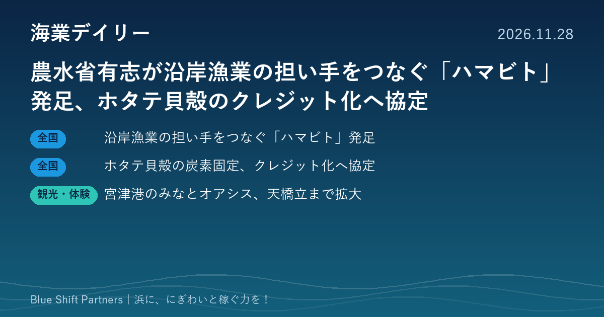

2026.11.28
農水省有志が沿岸漁業の担い手をつなぐ「ハマビト」発足、ホタテ貝殻のクレジット化へ協定

農林水産省の有志職員が、全国の浜で沿岸漁業の価値を高めている人を見つけてつなぐプロジェクト「ハマビト」を立ち上げました。北海道森町では、ホタテ貝殻の炭素固定をクレジットにする取り組みに向けて三者が協定を結ぶと発表していました。国土交通省は、京都府宮津港のみなとオアシスを、対象エリアを広げて11月15日付で再登録すると発表していました。
農林水産省の有志職員が沿岸漁業ネットワーキングプロジェクト「ハマビト」を発足、12月に高知・須崎の定置網を初視察へ
水産庁は11月27日、農林水産省の有志職員による沿岸漁業ネットワーキングプロジェクト「ハマビト」を発足したと発表しました。独自のやり方で沿岸漁業の価値を高めている漁業者や加工・流通業者、仲買人、料理人などを全国の浜に出向いて見つけ、SNS等で紹介し、意見を交わして得た知見を各地の取り組みの後押しに生かすとしています。第1回の視察は12月9日に、高知県須崎市で定置網漁業を営み直販にも取り組む九石大敷組合を訪れる予定です。2027年8月ごろには、つながった関係者が集まる交流大会「ハマビト100人会議（仮称）」を開く予定です。
ここがポイント：国の職員が浜を回り、価値を生み出している現場の工夫を拾い上げて広める取り組みです。直販や鮮度の工夫などで独自の取り組みをしている漁業者・加工業者にとっては、全国に知ってもらい、同じ志の仲間とつながる機会になりえます。
出典：水産庁 報道発表「沿岸漁業ネットワーキングプロジェクト「ハマビト」を発足」（2026-11-27）
ホタテ貝殻の炭素固定をクレジットに AICaS・北海道森町・北海道経済連合会が連携協定、2026年度内の初回発行を目指す
一般社団法人水圏統合カーボン固定推進機構（AICaS）は、北海道森町、北海道経済連合会と、貝殻などによる炭素固定（同機構は「ホワイトカーボン」と呼んでいます）のクレジット化に向けた連携協定を11月20日に結ぶと発表しました。森町に保管されているホタテ貝殻およそ4万トンを最初の対象とし、貝殻の重さや炭酸カルシウムの含有量の測り方、輸送や破砕で出る排出の差し引き方、第三者による検証の進め方を検討します。検証を経た量について、2026年度内にクレジットの初回発行を目指すとしています。方法が固まれば、道内のほかのホタテ産地や、カキ・アコヤガイの産地にも広げることを検討するとしています。
ここがポイント：保管や利用が課題になってきた貝殻を、炭素を固定した「資源」として値をつけようとする試みです。カキやホタテの養殖が盛んな浜の漁協・自治体にとって、貝殻の保管や処理の記録をどう残しておくかが、将来の収入につながる可能性があります。
出典：一般社団法人水圏統合カーボン固定推進機構（PR TIMES）「ホタテ貝殻の『ホワイトカーボン』クレジット化を目指すAICaS・北海道森町・北海道経済連合会が11月20日に連携協定を締結へ」（2026-11-19）
京都・宮津港の「みなとオアシスたいみやづ」が対象エリアを広げ「みなとオアシス宮津天橋立」に
国土交通省港湾局は10月30日、宮津港（京都府宮津市）の「みなとオアシスたいみやづ」の対象エリアを宮津港全体に広げ、11月15日に「みなとオアシス宮津天橋立」として再登録すると発表しました。代表施設は、天橋立に最も近い道の駅「海の京都 宮津」（宮津まちなか地域振興拠点施設）です。天橋立駅、島崎公園、みやづ歴史の館、丹後郷土資料館・旧永島家住宅と、観光船のりば3か所が新たに構成施設に加わります。田井臨海、島崎・浜町ウォーターフロント、天橋立の各エリアを結び、海上交通も生かして回遊しやすくすることをめざしています。
ここがポイント：港を中心に、道の駅、駅、資料館、観光船をひとつの「みなと」の単位で結び直した例です。漁港や港の周りに点在する直売所や体験の場を、どう一つの回遊ルートとして見せるかを考える自治体・協議会にとって参考になります。
出典：国土交通省 港湾局 報道発表「『みなとオアシス宮津天橋立』が誕生します！」（2026-10-30）
今日の3本は、どれも浜にあるものを「つなぎ直す」話です。現場の工夫をつなぐハマビト、捨てていた貝殻を炭素の価値につなぐ協定、港の周りの施設を一つの回遊につなぐみなとオアシス。新しく何かを建てる前に、すでにあるものをどう結ぶかを考えることが、稼ぐ力の近道になります。